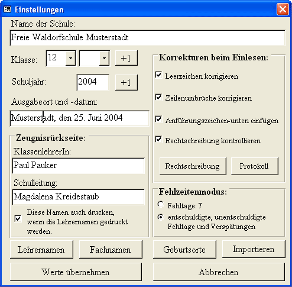
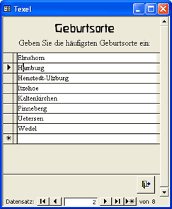

Texel-Hilfe

Einleitung
Beispiele
Überblick
Installation
Organisation
Einstellungen
Schülerdaten
Layout
Dateivorlagen
Schreiben
Einlesen
Korrigieren
Ausdrucken
Lückentexteditor
Kontakt
Eine Zeugnisverwaltung für Waldorfschulen
Zuerst werden die Klasse, eventuell die Parallelklasse, das Schuljahr und weitere Optionen festgelegt.

Schule
Schuljahr und Klasse
Ausgabeort und -datum
Korrekturen
Fehlzeitenmodus
Importieren
Namenslisten
Beenden des Dialogs
Schulname
Der angegebene Name der Schule wird auf den Einlege- und Zusatzblättern benutzt, aber auch auf den Kopien. Auf der Vorderseite des Zeugnisses müssen Sie in dem Bericht rptVorderseite den Namen der Schule je nach gewünschten Layout noch selber eingeben. Dort können Sie auch ein Logo einfügen.
Schuljahr und Klasse
Bei dieser Einstellung erscheint das Schuljahr 2003/2004 auf den Zeugnisseiten.
Die angegebene Klassennummer erscheint auf den Zeugnisseiten. Sie können bei mehreren Parallelklassen auch noch einen Buchstaben als Zusatz wählen. Wurde die Klasse geändert, wird beim Übernehmen der Daten gefragt, ob alle Fachtexte gelöscht werden sollen. Wird die Klasse um eine Stufe erhöht, wird außerdem gefragt, ob die Lehrernamen in das Layout der nächsten Klasse übernommen werden sollen.
Ausgabeort und -datum, Lehrernamen
Die Angaben erscheinen auf der Rückseite des Zeugnisses bei den Unterschriften.
Vor dem Ausdrucken kann eingestellt werden, ob Striche für die Unterschriften der Lehrer oder die Namen ausgegeben werden sollen. Die hier angegebenen Namen erscheinen dann auf der Rückseite den Zeugnisses.
Korrekturen
Beim Einlesen der Texte aus den Textdateien können vielfache Korrekturen der Texte automatisch vorgenommen werden, die sich als hilfreich erwiesen haben. Alle Korrekturen lassen sich hier aber auch abschalten.
Mehrfache Leerzeichen in den Texten werden auf ein Leerzeichen reduziert, wenn die Option Leerzeichen korrigieren aktiviert ist. Außerdem werden Leerzeichen vor Satzzeichen entfernt und ein Leerzeichen nach einem Satzzeichen eingefügt, wenn es noch nicht vorhanden ist.
Bei aktivierter Option Zeilenumbrüche korrigieren werden Absatzumbrüche entfernt, wenn am Ende der Absatzes kein Satzzeichen steht. So werden Texte korrigiert, wenn am Zeilenende die Eingabetaste gedrückt wurde. Diese Korrektur wird nicht bei Zeugnissprüchen ausgeführt.
Die Option Anführungszeichen-unten einfügen ersetzt zwei hochgestellte Anführungszeichen durch ein tief- und ein hochgestelltes.
Die Rechtschreibkorrektur ersetzt häufig falsch oder nach alter Rechtschreibung geschriebene Wörter durch die richtige Schreibweise. Die Wortliste lässt sich über die Schaltfläche Rechtschreibung einsehen, verändern oder erweitern. Hier sind auch Ersetzungen angegeben, die Sonderzeichen bei auf dem Mac geschriebenen Texte korrigiert.
Die Schaltfläche Protokoll lässt die beim Einlesen der Textdateien angefertigten Protokolle einsehen, ausdrucken oder löschen. Die Protokolle enthalten einen Eintrag für jede automatisch gemachte Korrektur und für alle abgespeicherten Texte.
Fehlzeitenmodus
In dieser Datenbank sind zwei verschiedene Möglichkeiten, die Fehlzeiten auszugeben implementiert:
Die Option Fehltage wird in Elmshorn bis zur achten Klasse verwendet. Hierbei wird in dem Formular Texte bearbeiten die Anzahl der Fehltage für jeden Schüler eingegeben und dann auf der Zeugnisrückseite ausgegeben.
Die zweite Option erfasst die Tage an denen eine Schüler entschuldigt und die Tage, an denen ein Schüler unentschuldigt gefehlt hat, sowie die Verspätungen. Aus diesen drei Zahlen wird eine entsprechender Text automatisch formuliert und auf der Zeugnisrückseite ausgegeben. Die Formulierung des Textes ist im Modul MFehlzeitentexte programmiert und kann mit wenigen VisualBasic-Kenntnissen dort abgeändert werden. Die drei nötigen Zahlen werden in dem Formular Texte bearbeiten eingeben.
Zur Erfassung der Daten kann vom Formular Texte bearbeiten aus ein Datenblatt Fehlzeiten ausgedruckt werden. Dieses füllt dass der Klassenlehrer oder -betreuer aus.
Importieren
Bei der Umstellung der Datenbank auf eine neue Texel-Version können Sie hier alle Schülerdaten, Texte und Einstellungen aus einer anderen Texeldatei übernehmen. Wählen Sie dazu im folgenden Dialog die Texeldatei mit den zu importierenden Daten aus.
Namenslisten

Bei der Eingaben der Fachnamen und Lehrernamen im Formular Layout können Sie die Namen aus einer Auswahlliste auseählen. Hier öffnen Sie Formulare, mit denen Sie die Listen an Ihre Schule anpassen können. Das Gleiche gilt für die Geburtsorte der Schüler, die im Formular Schülerdaten eingegeben werden müssen.
Um einen Eintrag zu löschen, klicken Sie auf den Anfasser ganz links von dem Datensatz und drücken Sie die Entfernen-Taste.
Beenden des Dialogs
Wird der Dialog abgebrochen, werden keine der gemachten Änderungen übernommen. Ausgenommen sind Änderungen in der Liste der Rechtschribkorrektur und den Protokollen. Werden die Änderungen übernommen, wird bei veränderter Klassennummer angeboten die Fachtexte und die Fehlzeiten zu löschen. Wurde die Klasse um eine Stufe erhöht, wird außerdem gefragt, ob die Lehrernamen in das Layout der nächsten Klasse übernommen werden sollen.